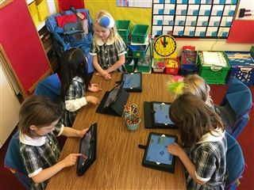

Programming
In the 20th Century, meaningful education was all about learning your ABCs. Today, it's centered on Alphas, Betas, and C++
Hamlin girls code! The Hamlin School is dedicated to teaching girls programming skills starting in Kindergarten. 
In Lower School, students are introduced to computational thinking using iPad apps such as Kodable, Scratch Jr, and Lightbot. They later experiment with block-based programming languages like Hopscotch, Blockly, and Scratch.
In Middle School, students continue learning with block-based programming environments as they create more complicated projects in Scratch. They also use programming environments from code.org, such as Game Lab and App Lab, to create interactive apps with JavaScript. Our Grade 8 students learn to hand-code HTML and CSS to publish websites. Students continue to practice computational thinking with iPad apps such as Swift Playgrounds and Grasshopper.
Through the use of  these apps, students learn the basics of coding including sequencing, conditional statements, Booleans, and loops. As they create projects using these tools, students learn about the design process as they prototype, test, and refine their animations and games. Students also gain an understanding of important mathematical concepts such as coordinates, variables, and random numbers.
these apps, students learn the basics of coding including sequencing, conditional statements, Booleans, and loops. As they create projects using these tools, students learn about the design process as they prototype, test, and refine their animations and games. Students also gain an understanding of important mathematical concepts such as coordinates, variables, and random numbers.